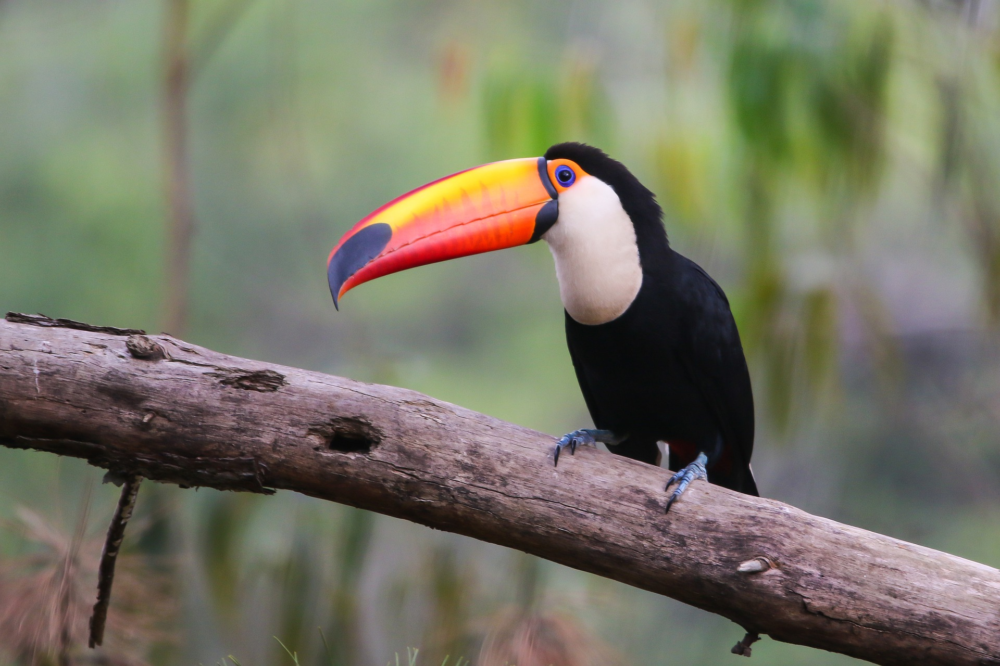
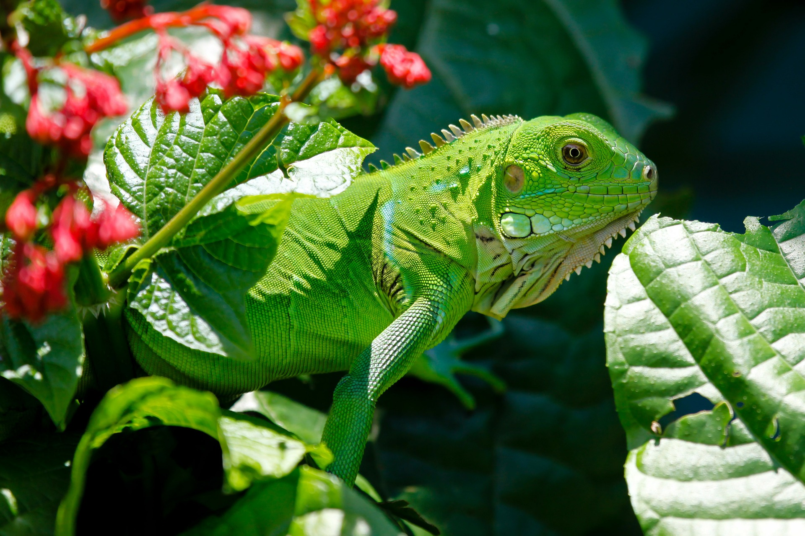
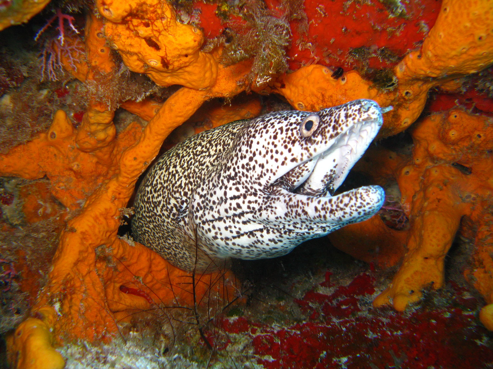
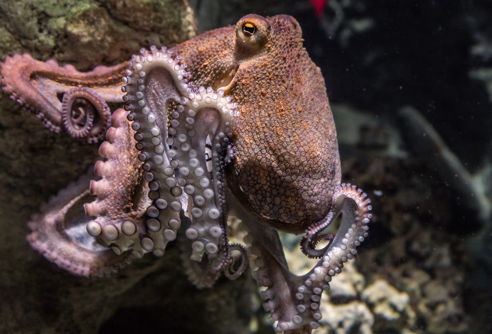

Toucans (/ˈtuːkæn/, UK: /-kən/) are members of the Neotropical near passerine bird family Ramphastidae. The Ramphastidae are most closely related to the American barbets. They are brightly marked and have large, often-colorful bills. The family includes five genera and over forty different species.
Toucans are arboreal and typically lay 2–21 white eggs in their nests. They make their nests in tree hollows and holes excavated by other animals such as woodpeckers—the toucan bill has very limited use as an excavation tool. When the eggs hatch, the young emerge completely naked, without any down. Toucans are resident breeders and do not migrate. Toucans are usually found in pairs or small flocks. They sometimes fence with their bills and wrestle, which scientists hypothesize they do to establish dominance hierarchies.
Iguana (/ɪˈɡwɑːnə/,[1][2] Spanish: [iˈɣwana]) is a genus of herbivorous lizards that are native to tropical areas of Mexico, Central America, South America, and the Caribbean. The genus was first described in 1768 by Austrian naturalist Josephus Nicolaus Laurenti in his book Specimen Medicum, Exhibens Synopsin Reptilium Emendatam cum Experimentis circa Venena
The word "iguana" is derived from the original Taino name for the species, iwana.[4] In addition to the two species in the genus Iguana, several other related genera in the same family have common names of the species including the word "iguana".
Moray eels, or Muraenidae (/ˈmɒreɪ, məˈreɪ/), are a family of eels whose members are found worldwide. There are approximately 200 species in 15 genera which are almost exclusively marine, but several species are regularly seen in brackish water, and a few are found in fresh water.[2]
The English name, from the early 17th century, derives from the Portuguese moréia, which itself derives from the Latin mūrēna, in turn from the Greek muraina, a kind of eel.[3][4]
The octopus (plural octopuses) is a soft-bodied, eight-limbed mollusc of the order Octopoda (/ɒkˈtɒpədə/, ok-TO-pə-də).
Around 300 species are recognised, and the order is grouped within the class Cephalopoda with squids, cuttlefish, and nautiloids. Like other cephalopods, the octopus is bilaterally symmetric with two eyes and a beak, with its mouth at the center point of the eight limbs ("tentacle" is used as an umbrella term for cephalopod limbs; however, within a teuthological context, "arm" is used to refer to such limbs while "tentacle" is reserved for feeding appendages not found on octopuses).